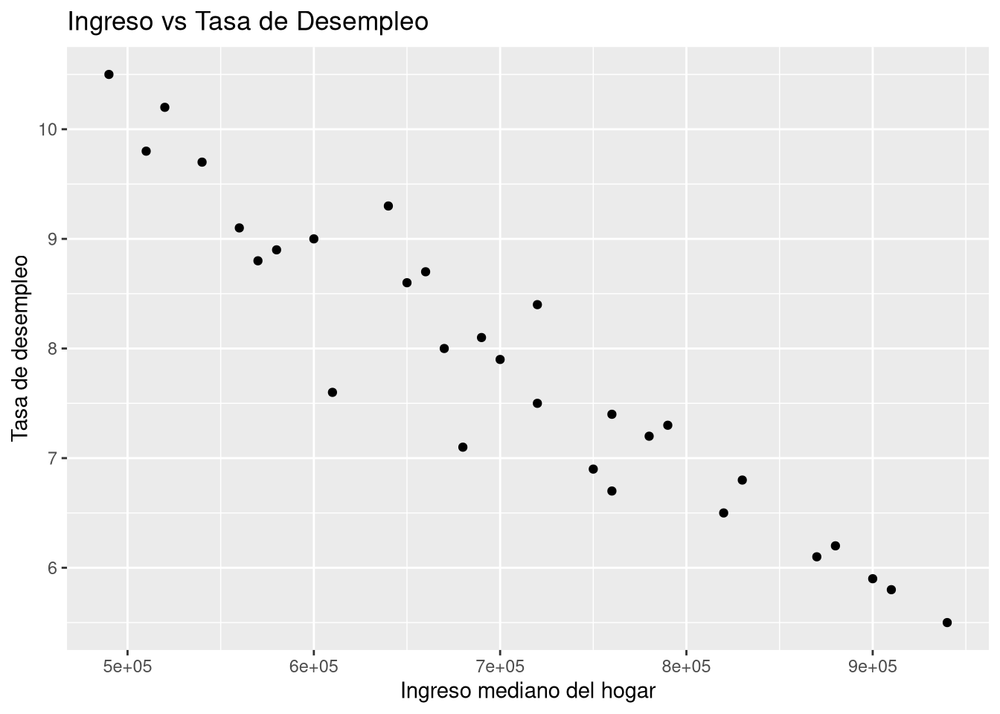
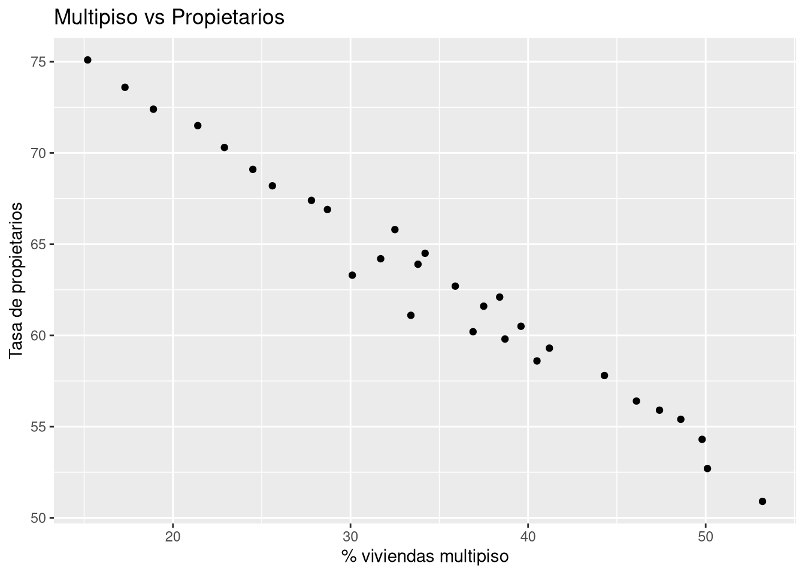
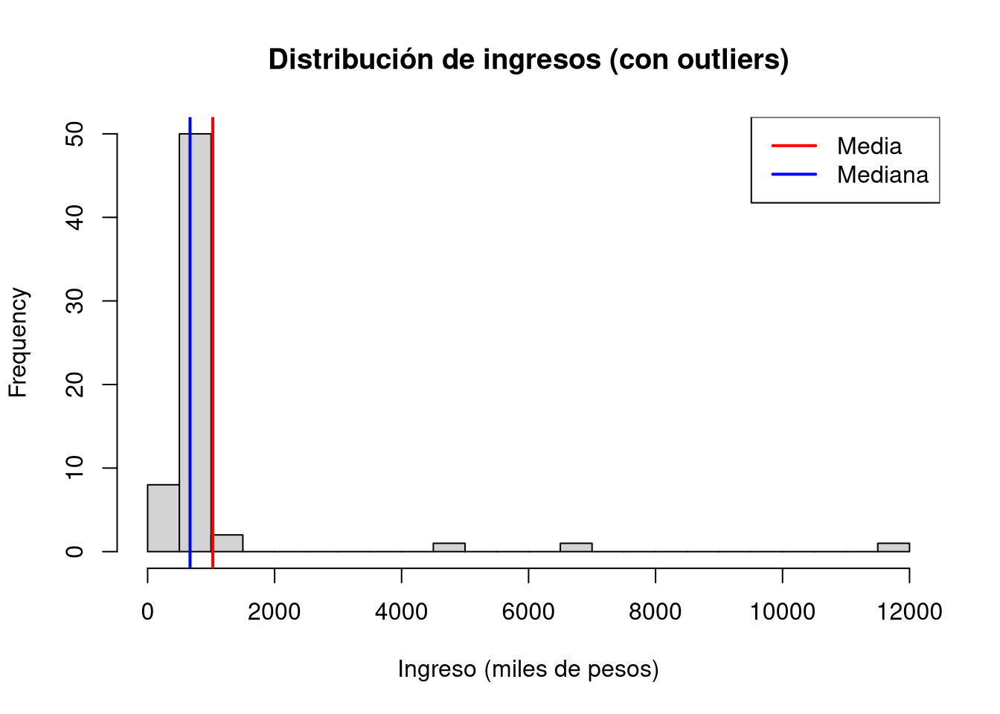

En esta lección se estudian los distintos tipos de variables estadísticas (numéricas y categóricas) y se introducen los conceptos de asociación, independencia y variables explicativa y respuesta.
Figura 1: Ilustración utilizada con fines educativos. Fuente: USF ClipArt Collection (University of South Florida).
Advertencia
Los datos utilizados en esta lección (region30) corresponden a una versión didáctica simplificada de la data county (openintro) que simula indicadores regionales en Chile. No representan datos oficiales del INE ni de ningún organismo público, y han sido construidos únicamente con fines pedagógicos para el estudio de tipos de variables y relaciones estadísticas.
1 Cargar librerías y explorar los datos
Cargamos tidyverse (colección de paquetes para ciencia de datos) y leemos el archivo region30.csv. Luego usamos glimpse() para ver la estructura de los datos de forma compacta.
pueden tomar cualquier valor en un intervalo (ej: tasa_desempleo).
Numéricas discretas
toman valores enteros que representan conteos (ej: poblacion_total).
Categóricas nominales
categorías sin orden (ej: region).
Categóricas ordinales
categorías con un orden natural (ej: nivel_educativo).
Pero cuidado: no todo lo que parece número es una variable numérica en sentido estadístico. Por ejemplo, un número de teléfono es un identificador, no tiene sentido calcular su promedio. En cambio, la tasa_desempleo sí es una variable numérica con la que podemos hacer operaciones.
Para las variables categóricas, podemos usar table() o count() para ver frecuencias. Por ejemplo, la variable region:
Cuando queremos explorar la relación entre dos variables numéricas, el gráfico adecuado es el diagrama de dispersión (scatter plot). Veamos si existe relación entre el ingreso mediano del hogar y la tasa de desempleo:
ggplot(region30, aes(x = ingreso_mediano_hogar, y = tasa_desempleo)) +geom_point() +labs(x ="Ingreso mediano del hogar", y ="Tasa de desempleo",title ="Ingreso vs Tasa de Desempleo")

¿Se observa alguna tendencia? ¿A mayor ingreso, menor desempleo?
Ahora exploremos otra posible relación: porcentaje de viviendas en edificios de varios pisos versus tasa de propietarios.
ggplot(region30, aes(x = viviendas_multipiso, y = tasa_propietarios)) +geom_point() +labs(x ="% viviendas multipiso", y ="Tasa de propietarios",title ="Multipiso vs Propietarios")

Importante: Que dos variables muestren una asociación en un gráfico no significa que una cause la otra. La correlación no implica causalidad.
3 Efecto de los valores atípicos (outliers) en la media y la mediana
Vamos a simular un conjunto de ingresos para entender cómo los valores extremos afectan las medidas de tendencia central.
Primero, generamos 60 ingresos “típicos” usando una distribución log-normal (común para ingresos) y luego añadimos tres valores extremadamente altos.
set.seed(123) # para que los resultados sean reproduciblesingresos_tipicos <-round(rlnorm(60, meanlog =log(650), sdlog =0.25))ingresos_extremos <-c(5000, 7000, 12000)ingresos <-c(ingresos_tipicos, ingresos_extremos)
Ahora tenemos 63 valores. Veamos un resumen estadístico:
length(ingresos)
[1] 63
summary(ingresos)
Min. 1st Qu. Median Mean 3rd Qu. Max.
398 578 668 1027 794 12000
Calculamos la media y la mediana:
media <-mean(ingresos)mediana <-median(ingresos)media
[1] 1026.524
mediana
[1] 668
Observa que la media es mucho mayor que la mediana debido a los valores extremos. Visualicemos la distribución con un histograma:
hist(ingresos, breaks =20, main ="Distribución de ingresos (con outliers)",xlab ="Ingreso (miles de pesos)")abline(v = media, col ="red", lwd =2)abline(v = mediana, col ="blue", lwd =2)legend("topright", legend =c("Media", "Mediana"), col =c("red", "blue"), lwd =2)

La media es sensible a outliers; la mediana es más robusta. Si eliminamos los valores extremos:
Clasifica las siguientes variables de region30. Para cada una, indica si es: numérica continua, numérica discreta, categórica nominal o categórica ordinal, y justifica brevemente.
Variable
Tipo
Justificación
Explorando la variable region. Al usar glimpse(region30) no se ven todos los valores de la variable region. ¿Qué comando usarías para listar todos los valores únicos de esa variable?
Tip
(Ayuda: prueba con unique(), sort(), table() o combinaciones)
# Escribe aquí tu código
Interpretación de gráficos. Observa el gráfico de dispersión entre viviendas_multipiso y tasa_propietarios. ¿Qué tendencia parece haber? ¿Crees que vivir en un edificio de varios pisos causa una menor tasa de propietarios? Explica.
Media vs mediana. En el ejemplo de los ingresos simulados, ¿por qué la media es mayor que la mediana? ¿Qué medida es más representativa del “ingreso típico” en presencia de outliers? ¿Por qué?